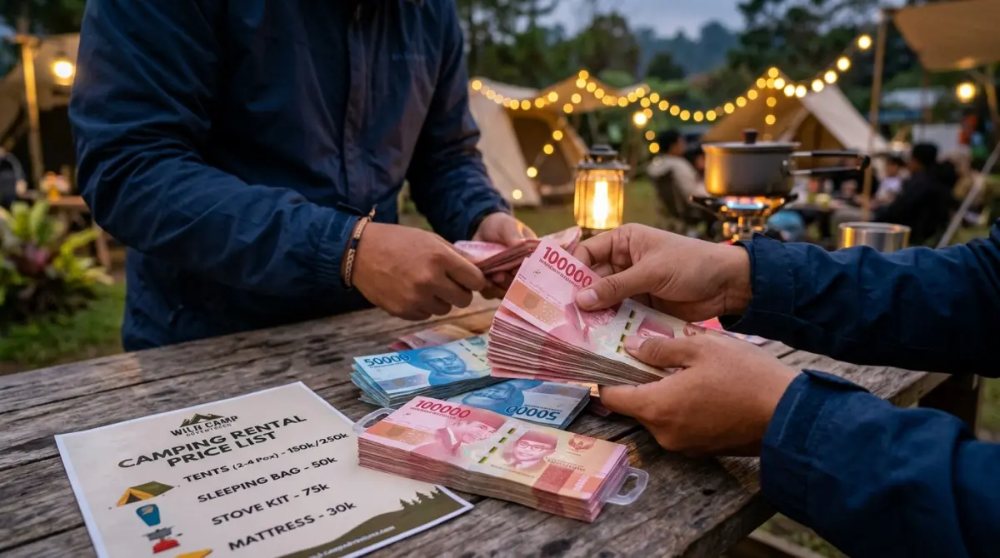

Jasa persewaan camping profesional menjadi solusi paling cerdas bagi pemula yang ingin segera memulai petualangan tanpa investasi besar.
Jasa persewaan camping profesional menjadi solusi paling cerdas bagi pemula yang ingin segera memulai petualangan tanpa investasi besar.
Coba ingat-ingat, sudah berapa kali wacana liburan ke alam bebas bersama teman-teman berakhir hanya sebagai obrolan di grup WhatsApp? Sering kali, rencana itu menguap begitu saja karena satu alasan klasik: tidak punya tenda dan malas keluar modal besar untuk beli perlengkapannya.
Padahal, waktu terus berjalan. Jangan sampai nanti saat usiamu terus bertambah dan fisik tak lagi sekuat sekarang, kamu menyesal karena melewatkan kesempatan menikmati udara segar di bawah bintang-bintang hanya gara-gara urusan logistik. Momen mereset pikiran dari kepenatan kerja itu tak ternilai harganya. Untungnya, untuk sekadar memulai, kamu tak perlu langsung membobol tabungan bulanan. Memanfaatkan jasa persewaan camping adalah solusi paling logis untuk mengubah wacana menjadi nyata akhir pekan ini juga.
Realitas Menjadi Pemula: Antara Ekspektasi dan Anggaran
Bagi kita yang sehari-hari berjibaku dengan deadline laporan, revisi dari klien, dan macetnya jalanan kota, melihat video orang menyeduh kopi di depan tenda dengan latar belakang pegunungan—seperti hawa sejuk di kawasan Batu atau Malang—terasa sangat menggoda. Hasrat untuk segera memborong perlengkapan outdoor di e-commerce pasti muncul. Ini wajar. Secara psikologis, membeli barang baru memberikan dorongan dopamin yang instan.
Namun, mari kita berpikir layaknya sedang merancang anggaran proyek tahunan di kantor. Apakah Return on Investment (ROI) dari membeli tenda seharga jutaan rupiah akan sepadan jika kamu hanya menggunakannya satu atau dua kali dalam setahun?
Banyak pemula terjebak dalam hype sesaat. Mereka membeli tenda spesifikasi tinggi, sleeping bag tahan suhu ekstrem, hingga kompor portabel mahal, hanya untuk menyadari bahwa gaya liburan ini ternyata tidak cocok dengan preferensi mereka. Pada akhirnya, barang-barang mahal itu hanya berakhir sebagai tumpukan debu di gudang. Di sinilah jasa persewaan camping hadir sebagai penyelamat dompetmu.
Biaya Beli vs Sewa: Hitung-Hitungan ala Orang Kantoran
Mari kita lakukan perhitungan sederhana. Untuk mendapatkan pengalaman berkemah dasar yang nyaman dan aman dari hujan, kamu setidaknya membutuhkan:
- Tenda double layer kapasitas 4 orang: Rp1.000.000 – Rp1.500.000
- 2 buah sleeping bag layak pakai: Rp400.000
- 2 buah matras: Rp100.000
- Kompor portabel dan nesting (panci masak): Rp300.000
- Lampu tenda: Rp100.000
Total biaya awal yang harus kamu keluarkan bisa menyentuh angka Rp2,5 juta.
Perbandingan: Beli vs Sewa
- Beli sendiri: Modal awal Rp2,5 juta. Hanya sepadan jika camping 10+ kali per tahun secara rutin.
- Sewa (paket lengkap): Rp150.000 – Rp300.000 per 2 hari 1 malam. Bisa camping 8–10 kali sebelum biayanya menyamai harga beli!
Dengan kata lain, kamu bisa berkemah delapan hingga sepuluh kali menggunakan jasa sewa sebelum biayanya menyamai harga beli alat baru. Bagi pemula yang baru ingin "cek ombak" apakah mereka benar-benar menyukai kegiatan luar ruang, menyewa adalah langkah mitigasi risiko finansial yang sangat cerdas.
Mengapa Jasa Persewaan Camping Lebih Menguntungkan Pemula?
Selain faktor efisiensi biaya, ada beberapa keuntungan praktis lainnya yang sering tidak disadari oleh orang yang baru pertama kali berkemah.
1. Bebas Pusing Memikirkan Ruang Penyimpanan di Rumah
Jika kamu tinggal di kamar kos, apartemen studio, atau rumah dengan ruang penyimpanan terbatas, membawa pulang peralatan kemah adalah sebuah masalah baru. Tenda berkapasitas empat orang, meskipun bisa dilipat, tetap memakan tempat. Belum lagi gulungan matras busa yang ukurannya cukup besar dan sleeping bag yang tidak boleh dikompres terlalu lama. Dengan menyewa, urusan penyimpanan sepenuhnya menjadi tanggung jawab pihak persewaan. Kamu berangkat dengan tangan kosong, mengambil barang di tempat sewa, dan mengembalikannya saat liburan usai.
2. Perawatan Alat Itu Rumit (Biar Pihak Rental Saja yang Pusing)
Banyak orang mengira bahwa setelah selesai camping, mereka tinggal melipat tenda, memasukkannya ke dalam tas, dan pulang. Nyatanya tidak demikian. Jika malam sebelumnya turun hujan atau area perkemahan berkabut tebal, tendamu akan basah kuyup. Mencuci dan mengeringkan tenda adalah pekerjaan fisik yang sangat melelahkan. Jika disimpan dalam keadaan sedikit saja lembap, tenda akan berjamur dan lapisan waterproof-nya bisa mengelupas. Bayangkan melakukan ini semua di kamar mandi kos pada Minggu malam, padahal besok pagi harus standby di kantor. Dengan menyewa, kamu tidak perlu melalui drama ini.
3. Kesempatan Uji Coba Berbagai Merek Tanpa Komitmen
Menggunakan alat dari tempat sewa ibarat mencoba berbagai kendaraan di pameran otomotif. Pada camping pertamamu, kamu mungkin menyewa tenda model dome standar. Lalu pada camping kedua, kamu ingin mencoba tenda model tunnel (lorong) yang terlihat lebih luas. Fasilitas sewa memungkinkan kamu mengenali preferensimu tanpa harus terikat komitmen pada satu barang. Setelah kamu mahir dan tahu persis gaya camping yang paling kamu nikmati, barulah kamu memiliki dasar pengalaman yang kuat untuk membeli perlengkapanmu sendiri.

Kalkulasi finansial yang cermat akan membuktikan bahwa menyewa jauh lebih hemat untuk pengalaman camping pertama dan kedua.Tips Memilih Tempat Persewaan Alat Kemah yang Tepercaya
Tentu saja, tidak semua tempat sewa memiliki kualitas pelayanan yang sama. Sama seperti mencari vendor untuk acara kantor, kamu harus jeli memilih. Jangan sekadar tergiur harga yang sangat murah, karena di alam bebas, alat yang buruk bisa mengancam keselamatanmu.
Pastikan kamu memilih penyedia jasa persewaan yang memiliki rekam jejak yang jelas. Di era digital ini, sangat mudah untuk mengecek ulasan mereka di Google Maps atau media sosial. Tempat persewaan yang profesional biasanya sangat transparan mengenai kondisi alat yang mereka miliki. Mereka merawat tenda dengan baik, mencuci sleeping bag setiap kali selesai disewa (ini sangat penting untuk kebersihan kulitmu), dan rutin mengecek fungsi kompor gas.
Saat mengambil barang, penyedia jasa yang baik tidak akan ragu untuk membongkar tenda di depanmu untuk memastikan tidak ada kerangka (frame) yang patah atau kain yang robek. Mereka juga biasanya memberikan edukasi singkat tentang cara mendirikan tenda yang benar kepada pelanggan pemula. Informasi faktual dari pengelola yang berpengalaman ini jauh lebih berharga daripada hanya menebak-nebak panduan dari internet saat kamu sudah tiba di tengah hutan.
"Waktu terbaik untuk menciptakan kenangan baru bukanlah 'nanti setelah gajian' atau 'nanti kalau alatnya sudah lengkap'. Waktu terbaik adalah akhir pekan ini."
— Motivasi Para Pejalan AlamKesimpulan: Mulai Langkah Pertamamu Sekarang
Keputusan antara membeli dan menyewa sebenarnya kembali pada frekuensi penggunaan dan seberapa besar komitmenmu. Namun, untuk langkah pertama atau kedua, logika finansial dan kepraktisan jelas memihak pada opsi menyewa. Menggunakan jasa persewaan camping adalah tiket termurahmu untuk melarikan diri sejenak dari hiruk-pikuk kota, tenggat waktu pekerjaan, dan polusi udara.
Waktu terbaik untuk menciptakan kenangan baru bukanlah "nanti setelah gajian" atau "nanti kalau alatnya sudah lengkap". Waktu terbaik adalah akhir pekan ini. Jangan sampai masa mudamu habis hanya untuk merencanakan sesuatu yang tak kunjung dieksekusi.
Sewa alat secukupnya, ajak teman yang bisa diandalkan, dan nikmati hangatnya kopi di alam terbuka. Kesempatan untuk merasakan damainya dunia tanpa notifikasi ponsel ada di depan mata, jangan biarkan ia berlalu hingga kamu hanya bisa menyesalinya di masa tua. Selamat merencanakan kemah pertamamu!
FAQ — Persewaan Alat Camping untuk Pemula